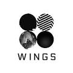
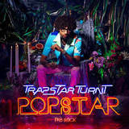
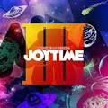
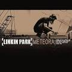
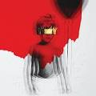

Kamikaze é o décimo álbum de estúdio do rapper norte-americano Eminem. Foi lançado sem anúncio prévio em 31 de agosto de 2018 através das gravadoras Aftermath, Shady e Interscope. O álbum conta com participações especiais de Joyner Lucas, Royce da 5'9" e Jessie Reyez, assim como vocais não creditados de Justin Vernon.
Man of the Woods é o quinto álbum de estúdio do cantor estadunidense Justin Timberlake. O seu lançamento ocorreu em 2 de fevereiro de 2018, através da RCA Records. A produção do álbum foi feita por Timberlake, The Neptunes, Timbaland, Danja, J-Roc, Eric Hudson e Rob Knox.
Traduzido do inglês-Rolling Papers 2 é o sexto álbum de estúdio do rapper americano Wiz Khalifa. Foi lançado em 13 de julho de 2018 pela Taylor Gang e Atlantic Records e é a sequência de sua estréia na gravadora Rolling Papers.
Revival é o segundo álbum de estúdio da artista musical estadunidense Selena Gomez. O seu lançamento ocorreu em 9 de outubro de 2015, através das gravadoras Interscope e Polydor. É o seu primeiro trabalho lançado sob estas editoras, após o término do contrato com a Hollywood Records
Cores & Valores é o quarto álbum de estúdio do grupo brasileiro de rap Racionais MC's, lançado em 2014 pelas gravadoras Cosa Nostra e Boogie Naipe.

Indigo é o nono álbum de estúdio do cantor e compositor estadunidense Chris Brown. Foi lançado em 28 de junho de 2019 pela editora discográfica RCA Records. O álbum marca o segundo álbum duplo da carreira do artista e é a sequencia de Heartbreak on a Full Moon, lançado em 2017.
Purpose é o quarto álbum de estúdio do cantor canadense Justin Bieber. O seu lançamento ocorreu em 13 de novembro de 2015 através da Def Jam Recordings. O álbum foi precedido pelo lançamento do single "What Do You Mean?" em 28 de agosto de 2015.

Wings é o segundo álbum de estúdio em coreano — quarto no total — do grupo sul-coreano BTS. O álbum foi lançado em 10 de outubro de 2016, para download digital mundialmente e em formato físico no mercado interno, contendo 15 faixas, com "Blood Sweat & Tears" como seu primeiro single.
Sabotage é o terceiro álbum de estúdio do cantor brasileiro Sabotage, lançado em 17 de outubro de 2016 de forma independente. Disco póstumo, o projeto soma composições e gravações do cantor após treze anos de sua morte.

Turnt PopStar é o segundo álbum de estúdio do cantor e rapper americano PnB Rock, lançado em 3 de maio de 2019 pela Atlantic Records. É um álbum duplo, e apresenta colaborações com Lil Durk, XXXTentacion, Quavo e A Boogie com Hoodie, entre outros. O álbum estreou no número quatro na Billboard 200 dos EUA

Traduzido do inglês-Joytime III é o terceiro álbum de estúdio do DJ americano e produtor de discos Marshmello. Foi lançado em 2 de julho de 2019, um dia antes da data prevista de lançamento, em 3 de julho. O álbum apresenta colaborações com os produtores Bellecour, Crankdat, Flux Pavilion, Wiwek, Slushii, TYNAN e Yultron.
Deus não Te Rejeita é o quarto álbum de estúdio do cantor Anderson Freire lançado em 2016, gravadora MK Music. disco foi produzido pelo próprio Anderson, juntamente com seu irmão Adelso Freire e o produtor Stéfano

Meteora é o segundo álbum de estúdio da banda americana de rock Linkin Park, lançado em 25 de Março de 2003. Na sequência de seu álbum remix Reanimation que incluiu remixes do seu álbum de estréia Hybrid Theory. A música em Meteora representa mudanças significativas desde o lançamento de Hybrid Theory.

7 é o sétimo álbum de estúdio do DJ e produtor francês David Guetta, lançado no dia 14 de setembro de 2018, através da What A Music, Parlophone Records e Warner Music.

ANTI é o oitavo álbum de estúdio da cantora barbadense Rihanna, lançado a 28 de janeiro de 2016 através das editoras Westbury Road Entertainment e Roc Nation.

Marília Dias Mendonça é uma cantora e compositora brasileira. Álbum musical de Marília Mendonça